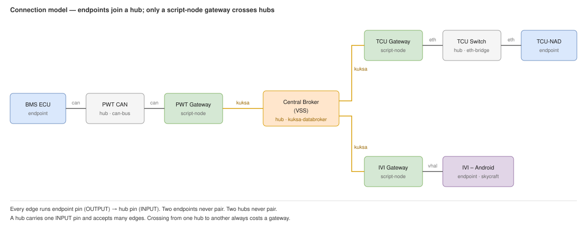

KUKSA Node Communication — Design Note¶
How CarSky nodes talk over KUKSA, and why M1 does not adopt it. Referenced from m1-cooperative-awareness.md §5.
1. What KUKSA is¶
- Eclipse KUKSA is an open-source signal broker. gRPC pub/sub over the COVESA VSS schema.
- Nodes publish and subscribe to named signal paths. They never address each other by IP.
- A
kuksa-databrokernode is the hub. Every participant wires onekuksapin to it — a star. - In the trial variant it replaces the baseline
eth-bridge. R1/R2/R4 payloads ride unchanged inside custom signal values; the contracts are not re-encoded as vehicle signals. - Topology and node configs: blueprint-m1-cooperative-awareness-kuksa.json.
2. KUKSA vs. Ethernet Bridge¶
| Ethernet Bridge (R6 baseline) | KUKSA Databroker (trial) | |
|---|---|---|
| What it is | Raw L2 segment | VSS signal broker |
| How nodes talk | Direct UDP/TCP sockets | Pub/sub on typed signal paths |
| Addressing | Peer IP and port | Signal path |
| Scriptable over REST | No — ETHERNET is absent from the addPin enum, so pins are wired by hand in the UI |
Yes — KUKSA is REST-creatable |
| Payload fit | Natural. Bytes on a socket, no schema | Awkward. Opaque payloads ride in 3 custom string signals |
| Status | Committed baseline | Studied alternative, not adopted |
3. KUKSA needs a VSS artifact¶
- The broker config points at a VSS artifact through
config.kuksa.vss.artifactId/versionId. - M1's three paths — bench→V2X CPM, V2X→ADA object, ADA→IVI warning — are in no standard VSS catalog, so a custom tree is required.
- Upload it in the UI: Artifacts → New Artifact → category VSS → Add Version. The REST API registers metadata only; it has no file-upload route.
- The returned artifactId and versionId fill the broker node's placeholders.
4. Reference topology¶
§2 treats KUKSA and the bridge as alternatives. In the platform's own reference blueprint blueprint-KIS.json they are complementary layers, joined by script-node gateways.
4.1 Node roles¶
| Node type | Role | Schema artifact |
|---|---|---|
can-bus |
One CAN segment. Decodes frames for its members. | DBC |
kuksa-databroker |
Cross-domain source of truth. Typed VSS signals. | VSS tree |
script-node |
The only translator. Holds pins on two or more buses and moves values between them in sandboxed Lua. | none — inline scriptContent |
eth-bridge |
Raw L2 segment. No schema, no translation. | none |
container / skycraft |
Endpoints. Produce or consume; never bridge. | per-node image |
4.2 Analysis from sample blueprint¶

Source: kuksa-connection-model.drawio
Three chains run through the export:
| Chain | Path |
|---|---|
| CAN → KUKSA | BMS ECU.can → PWT CAN → PWT Gateway.can · .kuksa → Central Broker |
| KUKSA → Ethernet | Central Broker → TCU Gateway.kuksa · .eth → TCU Switch → TCU-NAD.eth |
| KUKSA → VHAL | Central Broker → IVI Gateway.kuksa · .vhal → IVI – Android |
Rules that hold across the whole export:
- Every bus is hub-and-spoke. Endpoint pins are
OUTPUT, hub pins areINPUT, edges runOUTPUT → INPUT. Sokuksa ↔ kuksa,eth ↔ eth, andcan ↔ canpairings are impossible by construction. - No bus-to-bus edge. Two hubs cannot be wired together. A gateway is always interposed —
powertrain_gateway.luaputs it plainly: "powertrain signals reach other domains ONLY via KUKSA … no CAN-to-CAN bridge here." - Bridge membership is declared on the joining node. Add an
ethernetpin to the node and set itstargetto the bridge. There is no port model, so a bridge takes no second pin; its singleeth/INPUTpin stands for the whole broadcast domain, andpins: []is also valid. - Two bridges are two domains. KIS's
TCU SwitchandIVI Switchare not interconnected. A second bridge does not extend the first. - No fan-in limit. One
INPUTpin serves many edges, on a bridge or a broker alike. KIS's two-per-bridge is its topology, not a ceiling. - A container's ethernet address is optional. The bridge auto-assigns from its subnet. Set a static address only where a peer needs a fixed IP, or for a Skycraft guest — bridge DHCP binds the guest MAC to the declared address.
- A node may join several domains.
TCU Gatewayholdseth+kuksa;IVI Gatewayholdseth+kuksa+vhal. In KIS only script-nodes do this, because only they translate. Container nodes carry the same pin types and are not restricted by the platform.
4.3 What a pin gives the script¶
Pins surface in Lua as pins.<pinname>. The binding differs per type:
| Pin type | Lua binding | Surface |
|---|---|---|
CAN |
pins.can.db.<Message>.<Signal> |
DBC-decoded signals. :on_change(fn) and :publish(v) |
KUKSA |
pins.kuksa.vss.Vehicle.<path> |
VSS-typed signals. Same verbs |
ETHERNET |
kernel NIC e-<pinname> |
Raw L2/L3 only, no signal objects. IP is DHCP-assigned; Lua is sandboxed and reads it via nydus.vsomeip.iface_ip("e-eth"). The script brings its own protocol |
VHAL |
pins.vhal |
gRPC server on :9300 for the AAOS guest |
4.4 Gateway script shape¶
CAN → KUKSA. Both sides are decoded signal objects:
local kuksa, can = pins.kuksa, pins.can
can.db.PWT_VehicleSpeed.Speed_kph:on_change(function(v)
kuksa.vss.Vehicle.Speed:publish(v or 0)
end)
KUKSA → Ethernet. No signal API on the ethernet side, so the script resolves its own IP and speaks a real protocol:
local LOCAL_IP = nydus.vsomeip.iface_ip("e-eth")
assert(LOCAL_IP, "no IPv4 on e-eth yet — vsomeip cannot bind")
nydus.vsomeip.configure(...) -- offer SOME/IP service 0x2000, event 0x8001
kuksa.vss.Vehicle.Speed:on_change(function(v) app:notify(...) end)
Raw UDP is also available via nydus.net.udp(addr, port) with :on_recv() and :send_to().
The asymmetry is the point:
- CAN and KUKSA are schema-typed buses. The platform decodes them for you. A hop costs a schema artifact.
- Ethernet is a bare NIC. A hop costs an application protocol.
4.5 Applicability to M1¶
- M1 carries three opaque payloads: R1 CPM (ASN.1 UPER), R2 JSON, R4 JSON. None are vehicle signals.
- There is no CAN domain and nothing to translate, so the chains in §4.2 reduce to added hops.
- The gateway pattern becomes relevant only if a later milestone introduces real vehicle signals — tracked in future/m1-future-features-register.md.
5. Conclusion¶
- Why it was tried.
KUKSAis the only pin type that is REST-creatable and available on Container and Skycraft nodes, with a broker node to star-wire into — the structural analogue ofeth-bridge. - Why it is not the baseline. It overrides the "why not kuksa" rationale in every node guide, and requirement R6 is frozen. Swapping transport means re-freezing R6 across every consumer, for a payoff that is purely operational.
- Status. Studied alternative. The M1 topology that uses it is recorded in m1-cooperative-awareness.md §5.